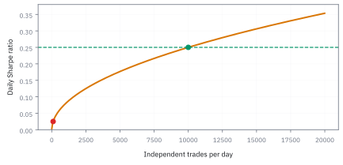

3.1 The Law of Large Numbers
ค่าเฉลี่ยของข้อมูลอิสระจำนวนมากจะเข้าใกล้ค่าเฉลี่ยจริง แต่ความคลาดของมันหดช้า แค่ตาม $1/\sqrt n$
กลยุทธ์เทรดสมมติตัวหนึ่งได้กำไรสุทธิเฉลี่ยไม้ละ \$0.005 (ครึ่งเซนต์) แต่กำไรของแต่ละไม้แกว่งไปมาด้วย SD \$2 ทีมเทรดวันละ 10,000 ไม้ หัวหน้าโต๊ะถามว่า “เทรดวันเดียวพอจะเห็นไหมว่ากลยุทธ์นี้ได้เปรียบจริง ถ้าไม่พอ ต้องเทรดกี่วัน”
ลองตอบก่อนเปิดเฉลย
วันเดียวไม่พอเลย หลัง 10,000 ไม้ ค่าเฉลี่ยกำไรต่อไม้ยังคลาดได้ราว $2/\sqrt{10{,}000}=\$0.02$ ซึ่งใหญ่กว่า edge จริงถึงสี่เท่า และวันหนึ่ง ๆ ยังมีโอกาสขาดทุนราว 40% ถ้าต้องการให้ edge ใหญ่เป็นสองเท่าของความคลาดนี้ ต้องใช้ $(2\times2/0.005)^2=640{,}000$ ไม้ หรือ 64 วันทำการ
ภาพรวมก่อนลงสูตร
กฎจำนวนมาก (law of large numbers, LLN) บอกว่า ถ้าเราเฉลี่ยข้อมูลที่อิสระกันและมาจากกลไกเดียวกันมากพอ ค่าเฉลี่ยที่เห็นจะเข้าใกล้ค่าเฉลี่ยจริงของกลไกนั้น นี่คือเหตุผลที่คาสิโน บริษัทประกัน และ market maker อยู่ได้ด้วย edge เล็ก ๆ ต่อครั้ง เพราะพวกเขาทำซ้ำเป็นล้านครั้ง
แต่คำถามบนโต๊ะไม่ใช่ “ลู่เข้าไหม” คำถามคือ “ลู่เข้าเร็วแค่ไหน” คำตอบคือความคลาดของค่าเฉลี่ยหดตาม $1/\sqrt n$ เท่านั้น ข้อมูลมากขึ้นสี่เท่าทำให้ความคลาดหดแค่ครึ่ง ขณะที่กำไรรวมกลับแกว่งกว้างขึ้นตาม $\sqrt n$
หน้านี้จะสร้างสูตรความคลาดจากการบวก variance แก้หาจำนวนไม้ที่ต้องใช้ พิสูจน์ LLN ด้วยอสมการ Chebyshev แปลงผลเป็น Sharpe รายวันและรายปี แล้วดูสองกรณีที่ LLN ช่วยน้อยกว่าที่คิด คือไม้ที่สัมพันธ์กัน และข้อมูลหางหนาจนไม่มีค่าเฉลี่ย
รูป — กรวยความไม่แน่นอนของกำไรเฉลี่ยต่อไม้
ศัพท์ที่ใช้ในหน้านี้
- i.i.d.
- independent and identically distributed: แต่ละไม้อิสระกันและมาจากการแจกแจงเดียวกัน เป็นสมมติฐานฐานที่ทำให้บวก variance ได้ตรง ๆ และเป็นสิ่งแรกที่ต้องสงสัยเมื่อใช้กับข้อมูลจริง
- ค่าเฉลี่ยตัวอย่าง (sample mean) $\bar X_n$
- ผลรวมของข้อมูล $n$ ตัวหารด้วย $n$ เป็นตัวเลขที่เปลี่ยนทุกครั้งที่เก็บข้อมูลชุดใหม่ ใช้เป็นตัวประมาณของค่าเฉลี่ยจริง $\mu$
- Standard error (SE)
- SD ของตัวประมาณเมื่อสมมติว่าเก็บข้อมูลชุดใหม่ซ้ำหลายครั้ง ใช้บอกว่าค่าเฉลี่ยที่เห็นคลาดจากค่าจริงได้ราวเท่าไร ต่างจาก SD ของข้อมูลรายตัว
- Weak LLN
- ข้อความว่าโอกาสที่ค่าเฉลี่ยตัวอย่างห่างจาก $\mu$ เกินระยะคงที่ใด ๆ จะเข้าใกล้ศูนย์เมื่อ $n$ โต ใช้รับรองว่าการทำซ้ำมากพอทำให้ค่าเฉลี่ยน่าเชื่อ
- อสมการ Markov และ Chebyshev
- ขอบเขตบนของโอกาสที่ตัวแปรจะใหญ่หรือห่างจากค่าเฉลี่ย โดยใช้แค่ค่าเฉลี่ยหรือ variance ไม่ต้องรู้รูปร่างการแจกแจง ใช้พิสูจน์ LLN และใช้เป็นขอบเขตแบบปลอดภัย
- Effective sample size $n_{\rm eff}$
- จำนวนข้อมูลอิสระที่ให้ความแม่นของค่าเฉลี่ยเท่ากับข้อมูลที่สัมพันธ์กันชุดหนึ่ง ใช้เตือนว่าจำนวนแถวไม่ใช่จำนวนข้อมูลจริง
- Sharpe ratio
- ค่าเฉลี่ยกำไรหารด้วย SD ของกำไรในช่วงเวลาเดียวกัน ใช้วัดว่าสัญญาณเด่นเหนือ noise แค่ไหน
สัญลักษณ์และหน่วย
| สัญลักษณ์ | ความหมาย | หน่วย |
|---|---|---|
| $X_i$ | กำไรสุทธิหลังต้นทุนของไม้ที่ $i$ | ดอลลาร์ |
| $\mu,\ \sigma$ | ค่าเฉลี่ยจริงและ SD จริงของกำไรต่อไม้ (0.005 และ 2) | ดอลลาร์ต่อไม้ |
| $n$ | จำนวนไม้ | ไม้ |
| $S_n,\ \bar X_n$ | กำไรรวมและกำไรเฉลี่ยต่อไม้ของ $n$ ไม้แรก | ดอลลาร์, ดอลลาร์ต่อไม้ |
| $\varepsilon$ | ระยะคลาดที่ยอมรับได้ | ดอลลาร์ต่อไม้ |
| $\rho$ | correlation ระหว่างกำไรของสองไม้ใด ๆ | ไม่มีหน่วย |
ขั้นที่ 1 — เริ่มจากเหรียญ: จำนวนหัวห่างออก แต่สัดส่วนหัวเข้าใกล้ครึ่ง
ก่อนแตะเงิน ลองกรณีที่นับได้ด้วยมือ ให้ $B_i=1$ เมื่อเหรียญยุติธรรมออกหัว และ $B_i=0$ เมื่อออกก้อย จำนวนหัวใน $n$ ครั้งคือ $H_n=B_1+\cdots+B_n$ เราจะดูว่าจำนวนหัวกับสัดส่วนหัว $H_n/n$ แกว่งต่างกันอย่างไร
ใจความคือ จำนวนหัวห่างจาก $n/2$ มากขึ้น เมื่อโยนมากขึ้น แต่สัดส่วนหัวห่างจาก 0.5 น้อยลง บรรทัดที่สองมาจาก $B_i^2=B_i$ เพราะ 0 กับ 1 ยกกำลังสองแล้วได้ค่าเดิม บรรทัดที่สามคือ variance เท่ากับค่าเฉลี่ยของกำลังสองลบกำลังสองของค่าเฉลี่ย (variance) บรรทัดที่สี่บวก variance ของ $n$ ครั้งตรง ๆ ซึ่งทำได้เพราะแต่ละครั้งอิสระกัน ขั้นถัดไปจะอธิบายว่าทำไม ส่วนบรรทัดสุดท้ายหาร SD ด้วย $n$ เพราะสัดส่วนคือจำนวนหัวหารด้วย $n$ ที่ $n=4,100,10{,}000$ ได้ SD ของจำนวนหัว 1, 5 และ 50 ครั้ง แต่ SD ของสัดส่วนเหลือ 0.25, 0.05 และ 0.005
รูป — ผลรวมแกว่งกว้างขึ้น ค่าเฉลี่ยแกว่งแคบลง
ขั้นที่ 2 — สูตรทั่วไป: ผลรวมแกว่งตาม √n ค่าเฉลี่ยแกว่งตาม 1/√n
ตอนนี้ทำแบบเดียวกันกับกำไรต่อไม้ $X_i$ ที่มีค่าเฉลี่ย $\mu$ และ SD $\sigma$ โดยสมมติว่าไม้เป็น i.i.d. เราต้องการสองปริมาณ คือกำไรรวม $S_n$ ซึ่งเป็นเงินที่ได้จริง และกำไรเฉลี่ย $\bar X_n$ ซึ่งเป็นตัวประมาณ edge
ความคาดหวังบวกกันได้เสมอ (expected value เป็นเชิงเส้น) แต่ variance ของผลรวมคือผลรวมของ variance บวก covariance ของทุกคู่ ความอิสระทำให้ covariance ทุกคู่เป็นศูนย์ จึงเหลือ $n\sigma^2$ ตรงนี้คือจุดที่คนพลาดบ่อย: การหารด้วย $n$ ทำให้ variance หารด้วย $n^2$ ไม่ใช่ $n$ เพราะ $\operatorname{Var}(cY)=c^2\operatorname{Var}(Y)$ เมื่อ $c=1/n$ ถอดรากแล้วได้ SE ที่หดตาม $\sqrt n$ ส่วน SD ของกำไรรวมคือ $\sigma\sqrt n$ ที่โตขึ้น กำไรรวมจึงแกว่งกว้างขึ้นเรื่อย ๆ ทั้งที่ค่าเฉลี่ยนิ่งขึ้น
รูป — กำไรคาดหวังโตตาม n แต่ SD ของกำไรรวมโตแค่ตาม √n

ขั้นที่ 3 — คำตอบของโต๊ะเทรด: ต้องเทรดกี่วัน
โจทย์ให้อะไรมาบ้าง: $\mu=0.005$ ดอลลาร์ต่อไม้, $\sigma=2$ ดอลลาร์ต่อไม้, วันละ 10,000 ไม้ อยากรู้ SE หลังหนึ่งวัน และจำนวนไม้ที่ทำให้ SE เล็กพอเทียบกับ edge
คำตอบ: หลังหนึ่งวัน SE คือ \$0.02 ต่อไม้ สี่เท่าของ edge จริง ถ้าอยากให้ SE เท่ากับ edge ต้องใช้ 160,000 ไม้หรือ 16 วัน ถ้าอยากให้ edge ใหญ่เป็นสอง SE ต้องใช้ 640,000 ไม้หรือ 64 วัน สูตรทั่วไปคือ “ถ้าอยากให้ edge เท่ากับ $k$ SE ต้องใช้ $n=(k\sigma/\mu)^2$” ซึ่งโตตามกำลังสองของอัตราส่วน noise ต่อ edge จุด 640,000 ไม้คือจุดที่ขอบล่างของกรวยในรูปแรกยกพ้นศูนย์ มันไม่ได้รับประกันว่าค่าเฉลี่ยที่เห็นจะเป็นบวก เพราะโอกาสแบบนั้นต้องรู้รูปร่างการแจกแจงของค่าเฉลี่ย ซึ่ง central limit theorem จะให้
ตรวจเองใน 10 วินาที: SE ลดครึ่งต้องใช้ข้อมูลสี่เท่า จาก 160,000 เป็น 640,000 ไม้ ถูกตามนั้น
ขั้นที่ 4 — อสมการ Markov: เดาหางได้จากค่าเฉลี่ยอย่างเดียว
สูตร SE บอกขนาดความคลาด แต่ LLN ต้องการข้อความเรื่องโอกาส ว่าค่าเฉลี่ยจะห่าง $\mu$ เกินระยะหนึ่งไม่บ่อย เครื่องมือแรกคืออสมการ Markov สำหรับตัวแปร $Y\ge0$ และค่าคงที่ $a\gt0$ ให้ $I=1$ เมื่อ $Y\ge a$ และ $I=0$ เมื่อไม่ใช่
ความคิดคือ ถ้าตัวแปรที่ไม่ติดลบมีค่าเฉลี่ยเล็ก มันจะใหญ่บ่อย ๆ ไม่ได้ บรรทัดแรกเป็นจริงทั้งสองกรณี ถ้า $Y\ge a$ ด้านขวาคือ $a$ ซึ่งไม่เกิน $Y$ ถ้า $Y\lt a$ ด้านขวาคือ 0 ซึ่งไม่เกิน $Y$ เพราะ $Y$ ไม่ติดลบ เงื่อนไข $Y\ge0$ จึงขาดไม่ได้ บรรทัดสองหาค่าเฉลี่ยทั้งสองข้าง และใช้ว่าค่าเฉลี่ยของตัวแปรที่เป็น 0 หรือ 1 คือโอกาสที่มันเป็น 1 ตัวอย่าง: ถ้ารายได้ต่อเดือนไม่ติดลบและเฉลี่ย \$3,000 สัดส่วนคนที่มีรายได้อย่างน้อย \$30,000 ต้องไม่เกิน $3{,}000/30{,}000=10\%$ โดยไม่ต้องรู้รูปร่างการแจกแจงเลย
รูป — การแจกแจงที่สุดขั้วที่สุดที่ Markov ยอมได้
ขั้นที่ 5 — Chebyshev แล้วได้ LLN ทันที
ตอนนี้เอา Markov มาใช้กับระยะห่างของค่าเฉลี่ย เลือก $Y=(\bar X_n-\mu)^2$ ซึ่งไม่ติดลบแน่นอน และ $a=\varepsilon^2$ สำหรับระยะคลาด $\varepsilon\gt0$ ที่กำหนดไว้ก่อน
นี่คือ weak LLN สำหรับข้อมูล i.i.d. ที่มี variance จำกัด บรรทัดแรกใช้ว่า “ห่างอย่างน้อย $\varepsilon$” เหมือนกับ “ระยะห่างยกกำลังสองอย่างน้อย $\varepsilon^2$” เพราะทั้งสองข้างไม่ติดลบ บรรทัดสองคือ Markov บรรทัดสามใช้ว่า $\mathbb E[\bar X_n]=\mu$ ค่าเฉลี่ยของระยะห่างยกกำลังสองจึงเป็น variance พอดี บรรทัดสุดท้ายใส่ $\operatorname{Var}(\bar X_n)=\sigma^2/n$ ที่หาไว้ตอนสร้างสูตรผลรวม ไม่ว่า $\varepsilon$ จะเล็กแค่ไหน ตัวส่วนมี $n$ ที่โตได้ไม่จำกัด โอกาสหลุดกรอบจึงเข้าใกล้ศูนย์ ข้อความนี้ไม่ได้บอกว่าทุกไม้ที่เพิ่มทำให้ค่าเฉลี่ยขยับเข้าหา $\mu$ มันบอกแค่ว่าการหลุดกรอบนาน ๆ เกิดยากขึ้น ฉบับแรกของกฎนี้ Jakob Bernoulli พิสูจน์ไว้สำหรับเหรียญในปี 1713 ส่วนบทพิสูจน์ผ่าน variance แบบนี้มาจาก Chebyshev ในศตวรรษที่ 19 ยังมีฉบับที่แรงกว่า (strong LLN) ที่ต้องการแค่ $\mathbb E|X|\lt\infty$ แต่ใช้บทพิสูจน์อีกแบบ
ขั้นที่ 6 — ขอบเขตที่รับประกันกับค่าประมาณแบบ normal
โจทย์ให้อะไรมาบ้าง: ที่ 640,000 ไม้ ถามโอกาสที่ค่าเฉลี่ยคลาดจาก $\mu$ อย่างน้อย $\varepsilon=\$0.005$ แล้วถามกลับว่าต้องใช้กี่ไม้ให้โอกาสนั้นไม่เกิน 5%
คำตอบ: Chebyshev รับประกันว่าโอกาสคลาดไม่เกิน 25% โดยไม่สมมติรูปร่างใดเลย ถ้าค่าเฉลี่ยแจกแจง normal จริง (ซึ่ง central limit theorem บอกว่าใกล้เคียงเมื่อ $n$ ใหญ่) โอกาสจริงคือ $2\Phi(-2)\approx4.55\%$ ตัวเลข 2 ในบรรทัดที่สองคือระยะคลาดวัดเป็นจำนวน SE โดย $\sqrt{640{,}000}=800$ ส่วน $\Phi$ คือ CDF ของ normal มาตรฐาน ถ้าอยากได้ 5% แบบรับประกัน ต้องใช้ 3.2 ล้านไม้ แต่ถ้ายอมเชื่อ normal ใช้ 614,656 ไม้ ส่วนต่างห้าเท่ากว่าคือราคาของการไม่ยอมสมมติอะไร
รูป — ขอบเขต Chebyshev เทียบโอกาสจริงแบบ normal
ขั้นที่ 7 — จากต่อไม้เป็นต่อวันและต่อปี: Sharpe โตตาม √n
หัวหน้าโต๊ะไม่ได้ดูกำไรรายไม้ เขาดูกำไรรายวันและรายปี ใช้สูตรผลรวมที่ได้ข้างบนกับวันละ 10,000 ไม้ แล้วรวม 252 วัน ซึ่งคือจำนวนวันทำการโดยประมาณของตลาดหุ้นสหรัฐฯ ในหนึ่งปี (บางปีเหลือ 250 หรือ 251 ตามวันหยุด)
Sharpe ของ $n$ ช่วงที่อิสระกันคือ $n\mu/(\sigma\sqrt n)=\sqrt n\,\mu/\sigma$ จึงโตตาม $\sqrt n$ เหตุผลเดียวกับที่ SE หด ไม้เดียวมี Sharpe $0.005/2=0.0025$ หนึ่งวัน 10,000 ไม้จึงได้ 0.25 ซึ่งยังต่ำพอที่วันหนึ่งขาดทุนได้ราว 40% ของวัน ตัวเลข 40.13% ใช้การประมาณแบบ normal ที่ central limit theorem ให้ เมื่อรวมทั้งปี กำไรเฉลี่ยคือ \$12,600 SD คือ $200\sqrt{252}\approx\$3{,}174.90$ และ Sharpe ราว 3.97 การประมาณแบบ normal ให้โอกาสขาดทุนทั้งปีเพียง $\Phi(-3.969)\approx0.0036\%$ ตัวเลขหางเล็กขนาดนี้ไวต่อข้อสมมติมาก ถ้าวันไม่อิสระกันหรือหางหนากว่า normal ตัวเลขจริงอาจสูงกว่าหลายร้อยเท่า หน้า การอนุมาน Sharpe ratio มีขอบเขตที่ไม่ต้องสมมติ normal
รูป — Sharpe รายช่วงโตตามรากของจำนวนไม้อิสระ

ขั้นที่ 8 — ไม้ที่สัมพันธ์กัน: หมื่นแถวไม่ใช่หมื่นข้อมูล
ทุกอย่างข้างบนพิงความอิสระ ถ้าไม้ทั้งหมดได้รับผลจากข่าวเดียวกันหรือการขยับของตลาดเดียวกัน กำไรของสองไม้ใด ๆ จะมี correlation $\rho\gt0$ ต้องกลับไปนับ covariance ที่เคยทิ้ง สมมติแบบง่ายที่สุดว่าทุกคู่มี correlation เท่ากัน
variance ของผลรวมคือผลรวมของทุกช่องในตารางคู่ $n\times n$ ช่องบนแนวทแยงมี $n$ ช่อง ช่องละ $\sigma^2$ ช่องนอกแนวทแยงมี $n(n-1)$ ช่อง ช่องละ $\operatorname{Cov}=\rho\sigma^2$ จุดสำคัญคือจำนวนช่องนอกแนวทแยงโตแบบ $n^2$ correlation เล็กนิดเดียวจึงชนะได้ ที่ $n=10{,}000$ และ $\rho=0.001$ ตัวคูณ variance คือ $1+9{,}999(0.001)=10.999$ ได้ $n_{\rm eff}\approx909.17$ และ SE ใหญ่กว่าแบบอิสระ $\sqrt{10.999}\approx3.317$ เท่า เมื่อ $n$ โตไม่จำกัด $\operatorname{Var}(\bar X_n)\to\rho\sigma^2=0.004$ SE จึงไม่ลดต่ำกว่า $\sqrt{0.004}\approx\$0.0632$ ซึ่งใหญ่กว่า edge สิบเท่ากว่า การเทรดถี่ขึ้นอย่างเดียวแก้ไม่ได้ (correlation ร่วมแบบนี้ต้องไม่ต่ำกว่า $-1/(n-1)$ ไม่เช่นนั้น variance จะติดลบ)
รูป — ตารางคู่ของ variance ของผลรวม
รูป — ข้อมูลที่มีข่าวร่วมกันเหลือข้อมูลอิสระเทียบเท่าไม่มาก

ขั้นที่ 9 — เมื่อไม่มีค่าเฉลี่ยให้ลู่เข้า: ตัวอย่าง Cauchy
LLN ทุกฉบับต้องการให้ค่าเฉลี่ยจริงมีอยู่ ลองดูการแจกแจง standard Cauchy (หนึ่งในการแจกแจงหางหนาของ สวนสัตว์การแจกแจง) ซึ่งหน้าตาเหมือนระฆังที่หางอ้วน แล้วถามว่าค่าเฉลี่ยของมันคืออะไร
ค่าเฉลี่ยตามนิยามต้องการ $\mathbb E|X|$ จำกัด แต่อินทิกรัลนี้โตแบบ log ไม่สิ้นสุด เพราะความหนาแน่นลดแค่แบบ $1/x^2$ ซึ่งคูณ $x$ แล้วเหลือ $1/x$ ความสมมาตรรอบศูนย์ไม่ได้ช่วย เพราะสองฝั่งต่างเป็นอนันต์ ผลที่ตามมาแปลกมาก: ค่าเฉลี่ยของ $n$ ตัวอิสระยังเป็น standard Cauchy ตัวเดิมทุก $n$ โอกาสที่ค่าเฉลี่ยหลุดเกิน 10 จึงเป็น 6.345% ไม่ว่าจะเฉลี่ยสิบตัวหรือล้านตัว เหตุผลเชิงภาพคือ ค่าที่ใหญ่ที่สุดใน $n$ ตัวมีขนาดราว $n$ เพราะ $P(|X|\gt x)\approx2/(\pi x)$ เมื่อ $x$ ใหญ่ ค่าเดียวนั้นหารด้วย $n$ แล้วยังเหลือขนาดหนึ่งหน่วย ไม่หดหายเหมือนกรณี variance จำกัด
รูป — ค่าเฉลี่ยสะสมของ normal นิ่ง แต่ของ Cauchy กระโดด
ความผิดที่ทำให้ตัวเลขดูน่าเชื่อแต่ผิด
คิดว่า LLN “ชดเชย” ความโชคร้าย: เหรียญยุติธรรมออกหัว 15 ใน 20 ครั้งแรก ซึ่งเกินคาด 5 ครั้ง ถ้าโยนต่ออีก 10,000 ครั้ง จำนวนหัวคาดหวังคือ $15+5{,}000=5{,}015$ จาก 10,020 ครั้ง สัดส่วนคือ 0.50050 ส่วนเกิน 5 หัวยังอยู่ครบในค่าคาดหวัง มันแค่ถูกเจือจางจนสัดส่วนเข้าใกล้ครึ่ง เหรียญไม่ได้ “ติดหนี้” ก้อย หลังขาดทุนติดกันหลายวัน กลยุทธ์ก็ไม่ได้มีโอกาสกำไรวันพรุ่งนี้มากขึ้น
LLN ลู่เข้าหาสิ่งที่ผิดได้อย่างมั่นใจ: ถ้าลืมต้นทุนไม้ละ \$0.006 edge จริงคือ $0.005-0.006=-\$0.001$ ข้อมูลยิ่งมาก ค่าเฉลี่ยยิ่งนิ่งรอบ −\$0.001 ไม่ใช่ +\$0.005 ข้อมูลเพิ่มลด noise ได้ แต่ไม่แก้ bias จากนิยามผิด การเลือกช่วงข้อมูลที่ดี หรือ การคัดผู้ชนะจากหลายแบบ
นับแถวเป็นข้อมูลอิสระ: 10,000 ไม้ที่มี correlation ร่วม 0.001 ให้ความแม่นเท่าไม้อิสระราว 909 ไม้ รายงาน SE ด้วย $\sigma/\sqrt{10{,}000}$ จะทำให้ SE เล็กไป 3.3 เท่า
คูณ Sharpe ด้วย $\sqrt{252}$ โดยไม่ตรวจ: สูตร $\sqrt n$ พิงความอิสระของแต่ละวัน ถ้าวันที่ดีมักตามด้วยวันที่ดี (autocorrelation บวก) Sharpe รายปีจริงจะต่ำกว่าที่คูณได้ ดู autocorrelation
ใช้ทำอะไรบนโต๊ะจริง
ก่อนเริ่มทดสอบกลยุทธ์จริงด้วยเงินน้อย ทีมควรคำนวณ $n=(k\sigma/\mu)^2$ ล่วงหน้า เพื่อรู้ว่าต้องรอนานแค่ไหนจึงจะตัดสินได้ ถ้าคำตอบคือสิบปี แปลว่าการทดสอบแบบนี้ตัดสินอะไรไม่ได้ ต้องหาหลักฐานทางอื่น เช่นข้อมูลความถี่สูงขึ้นที่ยังอิสระกัน หรือเหตุผลเชิงกลไก
หลักเดียวกันใช้กับ Monte Carlo ราคา option จากการจำลองมีความคลาด $\sigma/\sqrt n$ ถ้าอยากได้ทศนิยมเพิ่มอีกหนึ่งหลัก ต้องจำลองเพิ่มร้อยเท่า และ market maker ที่มี edge ต่อไม้เล็ก ๆ ต้องการไม้จำนวนมากที่ไม่สัมพันธ์กัน ไม่ใช่แค่ไม้จำนวนมาก
โจทย์ตรวจความเข้าใจ
1. ถ้าต้องการให้ SE ของกำไรเฉลี่ยต่อไม้ลดจาก \$0.02 เหลือ \$0.01 ต้องใช้กี่ไม้ และ SD ของกำไรรวมตอนนั้นเป็นเท่าไร
เฉลย
SE ลดครึ่งต้องใช้ข้อมูลสี่เท่า คือ $4\times10{,}000=40{,}000$ ไม้ ตรวจ: $2/\sqrt{40{,}000}=2/200=\$0.01$ ส่วน SD ของกำไรรวมคือ $2\sqrt{40{,}000}=\$400$ เพิ่มเป็นสองเท่าของ \$200 สองปริมาณเคลื่อนสวนทางกัน ค่าเฉลี่ยนิ่งขึ้นขณะที่ยอดรวมแกว่งกว้างขึ้น
2. ภายใต้ correlation ร่วม 0.001 ถ้าเพิ่มจำนวนไม้ไม่จำกัด SE ของกำไรเฉลี่ยจะเข้าใกล้เท่าไร และต้องการ edge เท่าไรจึงจะใหญ่เป็นสองเท่าของ SE นั้น
เฉลย
$\operatorname{Var}(\bar X_n)=\frac{\sigma^2}{n}+\frac{n-1}{n}\rho\sigma^2\to\rho\sigma^2=0.001\times4=0.004$ ดอลลาร์² SE จึงเข้าใกล้ $\sqrt{0.004}\approx\$0.0632$ edge ต้องอย่างน้อย $2\times0.0632\approx\$0.126$ ต่อไม้ หรือราว 25 เท่าของ edge ปัจจุบัน การเพิ่มจำนวนไม้ทำให้ถึงจุดนี้ไม่ได้
3. วันนี้ขาดทุนทั้งที่แบบจำลองบอกว่า edge เป็นบวก ขัดกับ LLN หรือไม่ และถ้าขาดทุนห้าวันติด ควรแปลกใจแค่ไหน
เฉลย
ไม่ขัด LLN พูดถึงค่าเฉลี่ยเมื่อ $n$ โต ไม่ได้รับประกันกำไรรายวัน แบบจำลองให้โอกาสขาดทุนรายวัน $\Phi(-0.25)\approx40.13\%$ ถ้าวันอิสระกัน โอกาสขาดทุนห้าวันติดคือ $0.4013^5\approx1.04\%$ ถือว่าแปลกพอจะตรวจระบบ แต่ในหนึ่งปี 252 วันมีช่วงห้าวันติดกันให้เกิดได้ราว 248 ช่วง จึงเจอสักครั้งได้ไม่ยาก
คำนวณซ้ำด้วย JavaScript
เปิดดูโค้ด
// Standard normal CDF: series near the centre, continued fraction in the tails.
function Phi(x) {
const ax = Math.abs(x), d = Math.exp(-ax * ax / 2) / Math.sqrt(2 * Math.PI);
if (ax < 3) {
let term = ax, sum = ax;
for (let k = 1; term > 1e-17 * sum; k++) { term *= ax * ax / (2 * k + 1); sum += term; }
return x < 0 ? 0.5 - d * sum : 0.5 + d * sum;
}
let f = 0;
for (let k = 300; k >= 1; k--) f = k / (ax + f);
return x < 0 ? d / (ax + f) : 1 - d / (ax + f);
}
const mu = 0.005, sigma = 2, perDay = 10000, days = 252, rho = 0.001;
const se = n => sigma / Math.sqrt(n);
const tradesFor = k => (k * sigma / mu) ** 2; // edge = k standard errors
const dailySharpe = perDay * mu / (sigma * Math.sqrt(perDay));
const result = {
coinSE: [4, 100, 10000].map(m => 1 / (2 * Math.sqrt(m))),
se100: se(100), seDay: se(perDay),
trades1SE: tradesFor(1), trades2SE: tradesFor(2), days2SE: tradesFor(2) / perDay,
chebyshevAt640k: sigma ** 2 / (640000 * mu ** 2), normalAt640k: 2 * Phi(-2),
chebyshevFor5pct: sigma ** 2 / (0.05 * mu ** 2), normalFor5pct: (1.96 * sigma / mu) ** 2,
dailyMean: perDay * mu, dailySD: sigma * Math.sqrt(perDay), dailySharpe,
dailyLoss: Phi(-dailySharpe),
annualMean: days * perDay * mu, annualSD: sigma * Math.sqrt(perDay * days),
annualSharpe: dailySharpe * Math.sqrt(days), annualLoss: Phi(-dailySharpe * Math.sqrt(days)),
varianceFactor: 1 + (perDay - 1) * rho, neff: perDay / (1 + (perDay - 1) * rho),
seFloor: Math.sqrt(rho) * sigma,
cauchyTail: 1 - 2 / Math.PI * Math.atan(10),
coinAfterStreak: (15 + 5000) / 10020, fiveLosingDays: Phi(-dailySharpe) ** 5
};
console.log(JSON.stringify(result, null, 1));ควรได้ seDay 0.02, trades2SE 640000, days2SE 64, neff ราว 909.17 และ annualSharpe ราว 3.969 ลองตั้ง rho = 0 แล้วดูว่า neff กลับมาเท่า 10,000
สิ่งที่ควรตอบได้หลังอ่าน
- ทำไมกำไรรวมแกว่งตาม $\sigma\sqrt n$ แต่กำไรเฉลี่ยแกว่งตาม $\sigma/\sqrt n$ และทำไม SE ลดครึ่งต้องใช้ข้อมูลสี่เท่า
- edge \$0.005 กับ SD \$2 ต้องใช้ 640,000 ไม้ (64 วัน) ให้ edge เท่ากับสอง SE ตามสูตร $n=(k\sigma/\mu)^2$
- พิสูจน์ weak LLN จาก Markov ไป Chebyshev ได้ และบอกได้ว่า Chebyshev หลวมกว่า normal ราวห้าเท่าในตัวอย่างนี้
- correlation ร่วมเพียง 0.001 ทำให้ 10,000 ไม้มีค่าเท่าไม้อิสระราว 909 ไม้ และทำให้ SE มีพื้นขั้นต่ำราว \$0.0632 ที่การเพิ่มไม้ข้ามไม่ได้
- LLN ต้องการให้ค่าเฉลี่ยจริงมีอยู่ ข้อมูลแบบ Cauchy เฉลี่ยเท่าไรก็ไม่นิ่ง
LLN บอกว่าค่าเฉลี่ยไปที่ไหน แต่ยังไม่บอกว่าความคลาดรอบปลายทางมีรูปร่างแบบไหน หน้าถัดไป central limit theorem จะแสดงว่ารูปร่างนั้นเกือบเป็นระฆัง normal เสมอ และใช้มันตอบว่าผลงานกองทุนสี่ปีหายากแค่ไหน